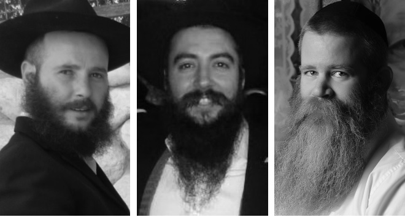

Tishrei: My Story
What do you do the next time someone asks you something along the lines of, “What do you do there (in 770) for an entire month?” Introduce them to R’ Boruch Ada of Dimona, R’ Oren Goldman of Kfar Saba, and R’ Eren Dror Levanon of Ramat Aviv. Going to the Rebbe caused a real upheaval in their lives. * Beis Moshiach got a unique look at the month of Tishrei with the Rebbe from three perspectives.

Before we get to the actual trip and the powerful experience of Tishrei with the Rebbe, to what extent was the Rebbe a presence in your process of coming close to Jewish practice?
R’ Boruch: R’ Motty Anati was the one who opened the window for me, and as everybody knows, in Fort Lauderdale they are very forthright about how the Rebbe is the one who charts the course and stands above everything. When you learn sichos and maamarim, and read about the Rebbe’s conduct and his letters, one does not put the brakes on their process, but actually wants to become a light that illuminates others.
R’ Oren: In the first stage of my process, I had a hard time with the talk about the Rebbe being “chai v’kayam.” I related more to the Alter Rebbe and the Tanya. I can recall exactly when I made the actual connection. One day I returned from the Technion, and I wasn’t in the mood to solve practice exercises, so I took out a book that they had lent me from the yeshiva. It was volume 30 of Likkutei Sichos. I began to learn the sicha there on B’Reishis, and I read the questions posed and I was shocked. Nobody learns Rashi in such a fashion. I had not seen in any stream of Judaism such all-encompassing brilliance and depth, and I remember sitting and thinking about everything the Lubavitchers tried to explain in light of that amazing sicha, that apparently it is true and not just wishful thinking.
R’ Eren: The Rebbe worked his way into my consciousness through the maamarim, sichos and farbrengens. R’ Yossi Ginsburgh infused the Rebbe into us through learning the sichos in a clear way as he knows to do. The understanding that there is a Rebbe in the world, there is Moshiach who teaches us that every detail in the world is G-dliness, and that the complete revelation of G-dliness in the world will be when the Rebbe Melech HaMoshiach will be revealed, is something we learned through those classes. At a later point, the Mashpia R’ Reuven Dunin injected the Rebbe into our veins by way of emotional connection. R’ Dunin brought us to the point of loving the Rebbe, to literally yearn for him.
Tell us about the first time that you flew to the Rebbe. At what point in your process was it? And could you share what the feelings were like?
R’ Boruch: During the first year in Fort Lauderdale, there was a strong atmosphere of traveling to the Rebbe and the bachurim pushed it, but I was hesitant. In retrospect, I can understand where that concern came from. The animal soul knew that a trip to the Rebbe is a one-way ticket. A visit to 770 often turns people into full-fledged Chassidim. When I came for Tishrei in the second year, I experienced such emotional intensity that I cannot describe in words. You actually sense that the Rebbe is present. Tefilla in 770 is more uplifting and the learning is different; I find myself understanding the maamarim of the Rebbe more easily there.
R’ Oren: The decision to drop out of the Technion and to devote myself to Torah study came to me just before the month of the holidays, and due to pressure from friends, including my younger brother who became involved after me but got into the thick of things earlier, I found myself on a flight to 770. It is interesting that days before the flight I went through a number of ego crushing experiences. One day somebody asked me to help in moving apartments, and I found myself carrying heavy beams and metal for an entire night, and that was only one example of many. When I arrived in 770, and the issue of sleep accommodations did not resolve itself quickly, it was no big deal to me.
The T’mimim in the yeshiva in Haifa prepared me well as far as the idea that when you come to 770, you don’t think about materialism, only about spirituality, and that is how it was. Whatever I received in material terms I said thank you very much, and I had no expectations in that area, and so the main thing I loaded up on was spirituality and that was plentiful. The t’fillos, the singing, the farbrengens, it is literally an earth-shaking experience.
R’ Eren: It is interesting that my mother worked for Avi Taub for years. He does not make a move without writing to the Rebbe and travels frequently to 770, and my mother would always scoff. In response, he would bless her that she should have a son that turns out like him. The reality is that his blessing was actualized, at least as far as traveling to the Rebbe. I am particular, even now with nine children [as of three years ago, when the interview took place], to be in 770 every Tishrei.
When I was a bachur I did not travel to 770. Back then, we were four baalei teshuva in the entire yeshiva and there were no bachurim shluchim like today. Even though they spoke about going to the Rebbe, it did not permeate the atmosphere like it does nowadays, so the first time I flew there was as a married man, three years after I got married. I had another problem, in that I had always avoided crowds and the Chassidim returning from 770 would always highlight the crowding and the pushing, which did not whet my appetite to make the trip. That changed for me one day. It was Lag B’Omer when a friend came back from the resting place of Rashbi and spoke of positive experiences from the crowding in Miron. I remember myself thinking that the same could be said for Tishrei in 770.
And that is what happened. When Tishrei came around, I decided that I was going, no matter what. I boarded the plane with the positive outlook of that friend who did not see the crowding as unpleasantness but as holiness and sublimity. When I entered 770, I paid no attention to the pushing, and I saw it all in a positive light.
As we are starting a new year, to what extent did your first trip to the Rebbe for Tishrei bring new changes to your life?
R’ Boruch: Plain and simple, it changed everything. If in Fort Lauderdale I became a baal teshuva, during that Tishrei in 770 I became a mekushar. The neshama sees and feels. And if in the past, I had my ups and downs, after spending the month of holidays in the Rebbe’s presence, even when there are downs, there is a constant sense that it is for the purpose of a greater ascent. The experience with the Rebbe gave me a solid base to stand on.
R’ Oren: Tishrei with the Rebbe got me to go learn in the yeshiva in Ramat Aviv, and in truth, it shaped me as a Chassid. I remember that I wrote a letter to the Rebbe in 770 between Rosh HaShana and Yom Kippur, in which I laid out a number of options that I was considering. Among them was dropping everything and going to the yeshiva in Ramat Aviv. The answer I received was clear that I needed to go to yeshiva, and as I looked up from the letter, I saw R’ Yossi Ginsburgh standing opposite me. I went over to him and showed him the answer and his response was, “Boruch haba.”
R’ Eren: The greatest change for me was to overcome my human nature, and to not see the crowding as something oppressive but as something that inspires joy, Chassidim from all over the world gathering together with joy and goodness of heart. By profession, I am a photographer, and if my colleagues are busy saving up money for more advanced equipment, I save my money for the trip to the Rebbe for Tishrei, as it gives me strength for the entire year. When I talk about Tishrei, I can feel my body trembling with excitement; it feels as if I am actually there now.
You speak of uplifting feelings and experiences, but sadly, we do not see the Rebbe now…
R’ Boruch: The simple answer is that we imagine the Rebbe based on the recorded diaries and snippets of video, but the truth is that even without that, we feel that the Rebbe is present in 770. This is a strong feeling that is difficult to explain in words, since there is no other equivalent place like 770 in the world to compare it to. When we are in 770, we feel close to the Rebbe.
R’ Oren: I remember the first time that I got out of the taxi and walked towards 770, and my heart was pounding with excitement. Every time I walk into 770, my throat tightens and I have to restrain myself from crying. It is not even a question if the Rebbe is present in 770, it is a reality. If one makes the appropriate preparations of learning the relevant sichos, such as “Beis Rabbeinu Sh’B’Bavel, that feeling intensifies. But even without that, one feels “Rebbe.”
I will share an amazing divine providence that I experienced in the final days of Tishrei in that first year. I had used up all my money, and Eshel was already closing up shop. The kitchen was closed and I didn’t know if I would have money to buy food. I knew that by nature I am bashful and would not ask for handouts from people.
I went to Mincha in the Rebbe’s minyan a week before my return flight, and I did not even have money for a taxi to the airport. I asked the Rebbe for help. I was definitely concerned and worried. When the davening concluded with the proclamation of “Yechi,” a tall fellow standing right behind me loudly called out that he was looking for a bachur with a license to transport a car for him to another city for good pay. I turned around to him and accepted the job and the money. This was G-dliness revealed; I felt that the Rebbe was looking out for me.
R’ Eren: On my first trip to the Rebbe, I had the good fortune of being on the same flight as R’ Tamam, the shliach in Yaffo, who had not been to 770 for a number of years. His excitement was mind-blowing and it infected me as well. When I got to 770, I met Ephraim Merzel who was then the shliach in Shiva, and he directed me and helped me. First he took me to the Hachnasas Orchim, and although they had finished eating, he managed to scrounge a piece of chicken for me. After that, he took me to an apartment of the Hachnasas Orchim, pointed to a mattress and said that is your bed. It was only the next day that I realized that it had been his bed and that he slept on a bench.
When speaking of the Rebbe and 770, it is possible to experience it even in such seemingly materialistic matters such as this. This does not exist in any place, certainly not on this scale. Amazing Hachnasas Orchim, generosity of Chassidim, and the brotherhood among Chassidim. You see in a tangible way that in 770 people put their own desires aside and help each other, and this is the greatest demonstration that the Rebbe is “chai v’kayam” and is present in 770, and that this place possesses a special holiness.
Everyone has some special moment that is engraved within him from Tishrei with the Rebbe. What are your special moments in the Rebbe’s presence?
R’ Boruch: I especially love the days of Simchas Beis HaShoeiva and obviously Simchas Torah. These are moments that I can revisit at any time throughout the year. The echo of thousands of Chassidim singing Chassidic niggunim with such joy is something amazing, incomparable. The unity between everyone, and the true love that shows through from the essence of the neshama.
R’ Oren: It is very hard for me to choose. The entire month is one solid block of peak experiences. Even days that might be considered ordinary take on a whole new significance in 770. In other places it is easier to single out moments or days, but in 770 there is no one moment that takes you away from the experience of Tishrei with the Rebbe. In his sichos, the Rebbe teaches us that there is no such thing as an ordinary day. Every holiday and day of significance, and even every day throughout the yearly cycle, has its own unique characteristic, and in 770 you are able to experience this in real life terms.
R’ Eren: There are many moving moments, but I get excited every year over the unity and love that exist among Chassidim. The Hachnasas Orchim at the Rebbe is something unique. We try to host bachurim from the yeshiva in Ramat Aviv every Shabbos, and we put in effort to make it special and inviting, but when I got to 770 I understood that we are far from grasping what true Hachnasas Orchim is like. Chassidim forgo all of their personal wants, and with complete bittul they help out every Chassid that comes to the Rebbe.
Could you tell about how you acclimated to the intense atmosphere of 770 during Tishrei?
R’ Boruch: The truth is that from the very first moment you become nullified and understand that you are not an existence unto yourself, so who is even thinking about acclimating? You just swim like a fish in the current.
R’ Oren: Every Jew feels like he is at home in 770, and I think that there is no need to try to portray what that is like. Beis Chayeinu is the home of every Jew in the world. In that context, there is a sort of inner peace, as if you are living inside a bubble. It is only when you go outside and start moving away from 770 that the challenges begin, when you see Chassidim that were educated in Lubavitch for generations and don’t exactly get as excited as you, and you can’t understand how that is possible.
R’ Eren: It is no question that for baalei teshuva who have seen it all and grasped the simple truth, the entire experience and acclimation in 770 is completely different. There are those who save up money in order to travel on vacation, then I know many people – mainly baalei teshuva – and I count myself among them, for whom this is their vacation. A vacation that not only provides material energy but mainly spiritual energy for the entire year. I am filled with gratitude to my wife, who allows me to fly every year.
When you go time and again, what happens to the feeling? Does it get stronger or weaker?
R’ Boruch: Obviously it gets stronger. I think that every Chassid, given the opportunity, would fly not only for Tishrei but for other auspicious calendar days, and perhaps this would be the place to extend thanks to the Eshel organization and the families of Anash in the neighborhood, who give above and beyond in order that the guest be able to focus entirely on matters spiritual.
R’ Oren: In my personal experience, the first time I had no material worries. The entire trip and getting myself settled was one long miracle, but on the following trips, I felt the Rebbe was saying to me, okay, now you’re already a Chassid, manage. My minimal needs were met but difficulties abounded. I consider it a z’chus.
R’ Eren: Nothing gets weaker. On every flight to the Rebbe, the anticipation for his hisgalus only gets stronger. I always say that just like the shluchim have a kinus at the end of Cheshvan, Anash as a whole has its kinus in Tishrei. People meet from all over the world and it makes the experience that much more powerful and it doesn’t weaken.
To conclude, you speak with such a chayus about Tishrei in 770. How can you paint a picture for someone who has yet to experience it?
R’ Boruch: You need to talk about it. But in order for it to really get through, you must learn the sichos that talk about 770 and about the Nasi Ha’dor. The Rebbe’s clear explanations combined with the actual reality is what shapes the experience.
R’ Oren: When I was drawn to Chabad by Rabbi Dan Ben Chur, he did not bother to mention the fact of our not seeing the Rebbe, but matter-of-factly spoke about a living Rebbe. When I told people, not necessarily Lubavitchers, that I was going to the Rebbe, someone said, “But you can’t see the Rebbe?” I didn’t know what to say and asked Dan. He sat down with me, for the first time, and opened s’farim and showed me how this is nothing more than a test, and the Rebbe is concealed, but G-d forbid to say he is not present. Later on, I learned the sichos of 51-52 and got the whole picture.
The amazing thing about Chabad, and I can say this because I started out with other groups, is that on the one hand, they address the deepest topics. On the other hand, they are practical and implement what they learn. That’s the charm in the Rebbe’s sichos. In other groups, you see either superficiality and lots of action, or depth but little action. For one who understands the reality, that despite the darkness we have today it must be that the Rebbe leads us, it’s very easy to convey to him an image of Tishrei in 770.
R’ Eren: When I am in 770 and I see the Chassidim making a path for the Rebbe, it moves me. It shows me that things are alive. Likewise, the fact that traveling to the Rebbe has not gotten less; on the contrary, it’s gotten so big. When something is alive, it grows stronger and we see from year to year how more and more Chassidim come. And you see how you come back from 770 with chayus, stories and experiences, and this is the best explanation that can be given as to why it is important to go to the Rebbe.
What message do you have for those who are still hesitant about going?
R’ Boruch: Make the effort, it’s worth it. Traveling to the Rebbe gives kochos to the entire family, for chinuch, shalom bayis, hatzlacha. Mainly for young men who are burdened by parnasa and sometimes become lax when it comes to davening and learning. Going to the Rebbe puts things in proportion and puts the material world where it belongs.
R’ Oren: Going to the Rebbe provides kochos for shlichus. Whoever learns Chassidus knows to what extent he is obligated to work in order to hasten the hisgalus. Being in the Rebbe’s presence, especially in Tishrei, recharges the batteries that drive this sense of shlichus.
R’ Eren: My message is that in 770 you see the “bless us all as one in the light of your countenance.” I, who hate crowds, cannot manage a year without Tishrei by the Rebbe, and that tells you a lot about the intensity of the place. The atmosphere in 770 is like a sweet dream from which you don’t want to wake up. It’s a pity on a Chassid who does not understand that in Tishrei you do all you can to see and be seen, in the presence of the Rebbe Melech HaMoshiach.
BIOS
R’ Boruch Ada of Dimona is from a traditional home but he did all he could to distance himself from his traditions. At age 27 he felt that Eretz Yisroel was too small for his ambitions and he went to Ft. Lauderdale, Florida. A good friend who had, in the meantime, become interested in Chabad, was supposed to pick him up from the airport and bring him directly to his apartment, but he stopped on the way back from the airport for Shacharis at the Chabad House.
“As soon as my friend introduced me to R’ Anati, he gave me such a warm, loving hug that I felt, in an instant, that I had found my place.
“I spent a year in Florida, a year in which, from time to time, I took on more and more, until I found myself turning into a Chassid and mekushar of the Rebbe MH”M. I returned to Dimona in order to get other friends, neighbors and relatives exposed to the great light.”
R’ Oren Goldman of Haifa grew up in a family that wasn’t opposed to Judaism simply out of ignorance and apathy of anything to oppose. After an exciting term of service in the air force intelligence corps, he met someone who taught him the secrets of natural healing and how they can be found in Jewish books. This led him to take an interest in Judaism and he became a steady participant in shiurim that Litvishe lecturers give in Haifa.
One day of Chanuka, when he met a group of T’mimim, including R’ Dan Ben Chur, the latter arranged to learn Chassidus with him.
“Learning Chassidus changed me from one extreme to another. At first, I continued studying at the Technion and would go to yeshiva too. Later, I left the Technion but stayed home and learned. Later still, I became a student in the yeshiva in Haifa. The rest is history. After I married, we settled in Kfar Saba. We help the shliach, R’ Yoel Yemini.”
R’ Eren Levanon was born in Netanya to irreligious parents. He says that since he was a boy, he did not like the direction in which he was being led. Because of his height, he was urged to play basketball, a game he wasn’t drawn to. In the army, they pushed him into a combat unit where he did not feel he belonged. In order to feel he belonged, he did what most young Israelis do – go to India.
In India he found himself drawn to a kind of mysticism which originates from South American Indians. On vacation back in Eretz Yisroel he checked out where Spanish is taught so he could delve more deeply into their ideas.
“My step-mother, upon hearing of my interest in this cult, suggested that I check out what Judaism has to offer, and sent me to Rabbanit Yemima Avital. Through her lectures, I was exposed to Rabbi Yossi Ginsburgh of Ramat Aviv. I became part of the nucleus that founded his yeshiva. The rest is history. R’ Reuven Dunin, who joined the staff of the yeshiva, left his indelible Chassidic imprint, and today, in addition to working in photography, we are shluchim of the Rebbe in Ramat Aviv.
Nosson Avrohom. "Tishrei: My Story." Beis Moshiach, no. 1088 (October 1, 2017).